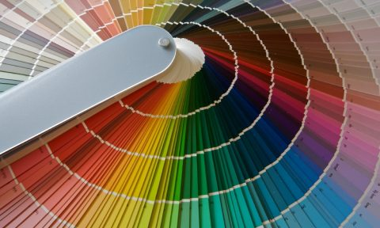
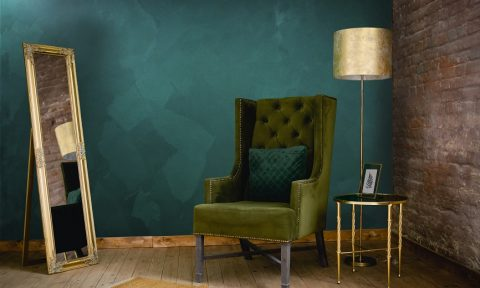
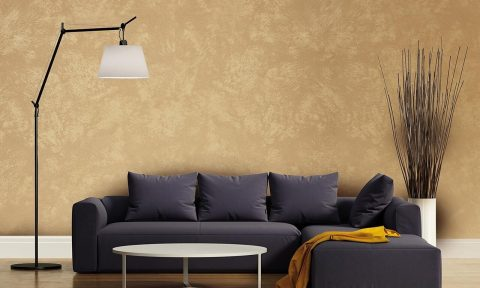
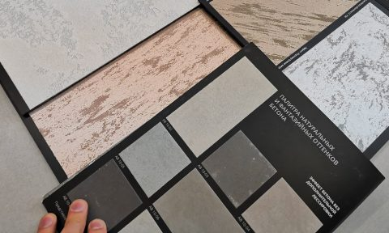
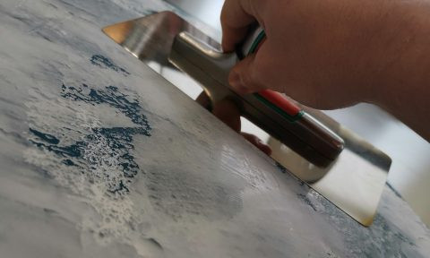
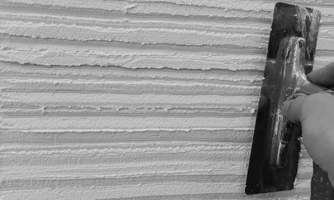

Блог / Статьи Всё о декоративной штукатурке в Нижнем Новгороде  Статьи Колеровка декоративных штукатурок и красок — Подбор цвета краски или декоративной штукатурки – довольно востребованный вопрос, с которым необходимо обращаться только к проверенным специалистам. Наша компания предлагает услугу колеровки красок и штукатурок  Статьи Штукатурка с эффектом шелка — Современный косметический ремонт становится настоящим полем битвы заказчиков, дизайнеров и продавцов. Для одних это возможность обогатиться (предложить подходящий продукт), для других обустроить уютное гнездышко, ну а третьим стать обладателем  Статьи О материалах — О материалах Выбора строительных материалов для внутренней отделки стен великое множество, но наибольшей популярностью пользуются декоративные краски и фактурные штукатурки. Благодаря разнообразию фактур, цветов можно подобрать наиболее подходящий вариант  Статьи Декоративная штукатурка Нижний Новгород — Декоративная штукатурка – популярное отделочное средство. Она изготавливается на основе минерального, либо синтетического материала, включает в себя разнообразные наполнители и другие добавки. Декоративная  Статьи Венецианская штукатурка Нижний Новгород — Ещё в Древнем Риме изобретательные мастера однажды попробовали смешать мраморную пыль и гашеную известь. В результате получился совершенно новый отделочный материал, по своим свойствам не уступавший мрамору. Мягкий и эластичный, при этом  Статьи Мастер по декоративной штукатурке — Обои и краска на стенах стали настолько банальны, что пора задуматься о новых идеях для дизайна. Отделка декоративной штукатуркой будет отличной идеей для оформления любого помещения. При выборе следует учесть множество нюансов возможностей и